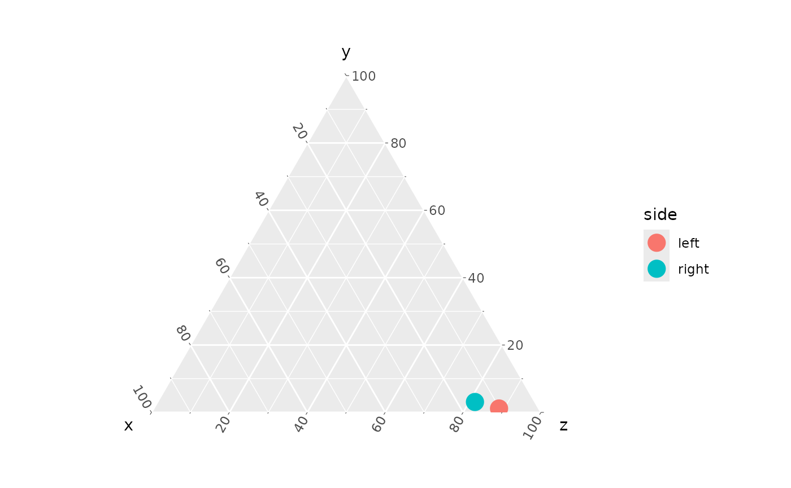
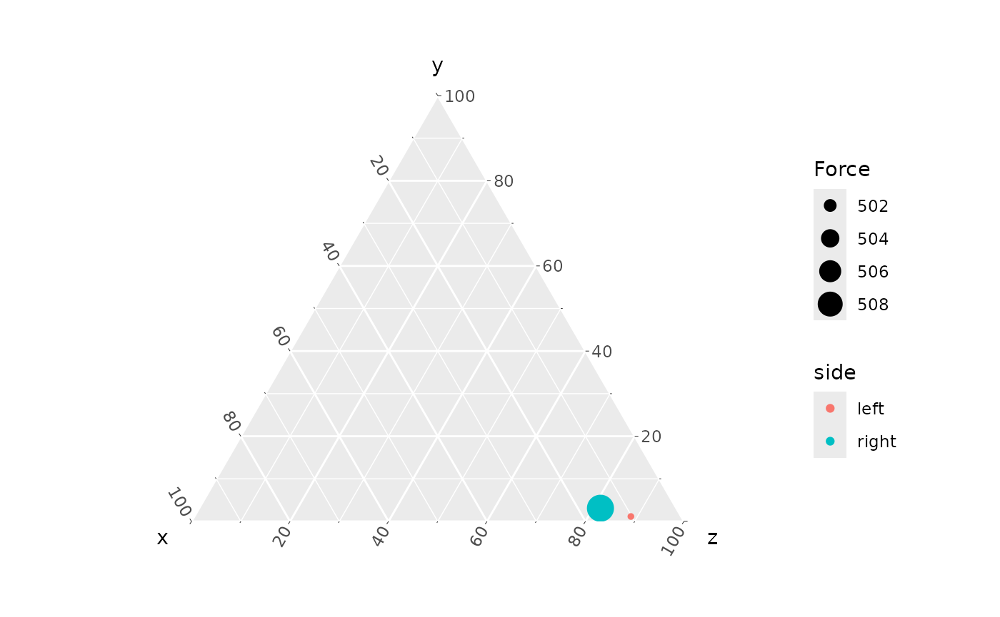

Working with stl files
centroid.RmdStereolithography (.stl) mesh files can be exported from
most segmentation software. In our workflow, there are two files for
each muscle, wherein the origin and insertion attachment areas of the
muscle are “mapped” onto the surface of a bone model (see Cost et al.,
2020, 2022; Wilken et al., 2019, 2020 for description).
There is no directionality to the calculation of either centroid size
(area) or location from a mesh, so either surface can be the “origin”.
If you are generating Maya mel code for generating a model + muscle
vectors, then the order matters to get the arrowhead on the correct end,
however there is a flag in make_mel() to reverse the
arrows.
Important: you should export stl meshes as
binary, with little endian byte encoding (not ASCII or binary
with big endian). If not, you will get a cryptic error that will be very
difficult to diagnose. MuscleTernary has a wrapper function
read_stl() around the rgl pachage
readSTL() function which should catch any read
errors, but it hasn’t been tested for all possible cases (i.e., those I
haven’t encountered yet). If you are reading stl files in directly, use
read_stl().
The package includes a pair of files that map the origin and
insertion areas of the left m. Pterygoideus dorsalis (mPTd):
L_mPTd_Or.stl and L_mPTd_Ins.stl. The right
mPTd are also included and will be used later in this tutorial.
system.file(...) allows us to open a file that was
installed with the package. In most cases, you would use a path to your
mesh file in its place.
library(tidyverse)
library(MuscleTernary)
# Save the local path to the stl file.
stl_path <- system.file("extdata",
"L_mPTd_Ins.stl",
package = "MuscleTernary")
stl <- read_stl(stl_path)read_stl() returns a matrix with (x, y, z) coordinates
of the vertices of the mesh triangles.
stl[1:10, ]
#> [,1] [,2] [,3]
#> [1,] 80.15495 -11.792723 -570.9537
#> [2,] 80.72946 -11.396370 -571.3650
#> [3,] 79.95493 -11.389565 -571.5762
#> [4,] 80.84564 -9.106031 -573.8356
#> [5,] 80.04286 -9.215285 -573.6454
#> [6,] 80.41844 -9.701449 -573.2871
#> [7,] 80.15350 -10.181118 -572.8048
#> [8,] 79.55407 -10.362929 -572.4216
#> [9,] 80.77268 -10.513458 -572.4617
#> [10,] 80.15495 -11.792723 -570.9537
# Dimensions of the matrix
dim(stl)
#> [1] 6423 3Centroid location and centroid size
The centroid location (often just the “centroid”) of the mesh is
simply the mean of each column. To simply usage,
centroid_location() takes a single argument with the string
path to the file.
colMeans(stl)
#> [1] 64.784475 8.529847 -567.928419
centroid_location(stl_path)
#> [1] 64.784475 8.529847 -567.928419The size of the centroid is the 3D distance of each vertex from the centroid.
# Calculate the centroid
centroid <- centroid_location(stl_path)
# Apply the distance formula
sqrt(sum((centroid[1] - stl[, 1]) ^ 2 +
(centroid[2] - stl[, 2]) ^ 2 +
(centroid[3] - stl[, 3]) ^ 2))
#> [1] 2576.131
centroid_size(stl_path)
#> [1] 2576.131Area of an stl mesh
The area of an stl mesh is the summed area of all the triangles making up the mesh.
area <- stl_area(stl_path)
area
#> [1] 3280.389Deriving ternary coordinates from a pair of stl meshes
To get to ternary coordinated from stl mesh files, first we need the locations of the centroids. Here we use the left mPTd:
L_mPTd_Or <- centroid_location(system.file("extdata",
"L_mPTd_Or.stl",
package = "MuscleTernary"))
L_mPTd_Ins <- centroid_location(system.file("extdata",
"L_mPTd_Ins.stl",
package = "MuscleTernary"))centroid_location() returns a 3-element vector, which we
can extract into a tibble. There are other ways to do this step, but
this is the most straightforward, if more verbose.
mPTd_L <- tibble(
muscle = "mPTd",
side = "left",
x_origin = L_mPTd_Or[1],
y_origin = L_mPTd_Or[2],
z_origin = L_mPTd_Or[3],
x_insertion = L_mPTd_Ins[1],
y_insertion = L_mPTd_Ins[2],
z_insertion = L_mPTd_Ins[3]
)
mPTd_L
#> # A tibble: 1 × 8
#> muscle side x_origin y_origin z_origin x_insertion y_insertion z_insertion
#> <chr> <chr> <dbl> <dbl> <dbl> <dbl> <dbl> <dbl>
#> 1 mPTd left 26.7 21.4 -456. 64.8 8.53 -568.We then repeat the same for the right mPTd and bind the left and right together to have some comparative data:
R_mPTd_Or <- centroid_location(system.file("extdata",
"R_mPTd_Or.stl",
package = "MuscleTernary"))
R_mPTd_Ins <- centroid_location(system.file("extdata",
"R_mPTd_Ins.stl",
package = "MuscleTernary"))
mPTd_R <- tibble(
muscle = "mPTd",
side = "right",
x_origin = R_mPTd_Or[1],
y_origin = R_mPTd_Or[2],
z_origin = R_mPTd_Or[3],
x_insertion = R_mPTd_Ins[1],
y_insertion = R_mPTd_Ins[2],
z_insertion = R_mPTd_Ins[3]
)
mPTd <- bind_rows(mPTd_L, mPTd_R)
mPTd
#> # A tibble: 2 × 8
#> muscle side x_origin y_origin z_origin x_insertion y_insertion z_insertion
#> <chr> <chr> <dbl> <dbl> <dbl> <dbl> <dbl> <dbl>
#> 1 mPTd left 26.7 21.4 -456. 64.8 8.53 -568.
#> 2 mPTd right -23.4 18.7 -460. -67.2 -0.988 -560.Passing that tibble to coords_to_ternary() produces
ternary coordinates. By not using the grouping argument, we
get coordinates for both left and right (not the average of the two). We
can then make a simple ternary plot comparing the muscles’
orientations.
coords_to_ternary(mPTd)
#> # A tibble: 2 × 5
#> muscle side x y z
#> <chr> <chr> <dbl> <dbl> <dbl>
#> 1 mPTd left 10.2 1.16 88.6
#> 2 mPTd right 15.4 3.09 81.5
coords_to_ternary(mPTd) |>
ggtern(aes(x, y, z, color = side)) +
geom_point(size = 5)
Estimating PCSA
The origin and insertion meshes can be used to estimate physiological cross-sectional area (PCSA; see Sellers, et al., 2017 for additional discussion). PSCA is calculated as the volume of a frustum with areas equal to the attachments (\(V_m\)) divided by fascicle length (\(l_f\)) and multiplied by the cosine of the angle of pennation (\(\theta\)).
\[PCSA = \frac{V_m}{l_f} \cdot \cos(\theta)\]
where
\[V_m = \frac{l_m}{3} \cdot (A_{or} \cdot A_{ins} + \sqrt{A_{or} \cdot A_{ins}})\]
\(l_m\) is the distance from the centroid of the origin to the centroid of the insertion and \(A_{or}\) and \(A_{ins}\) are the origin and insertion areas, respectively.
For a pair of stl meshes and values for \(l_f\) (fascicle_length which
defaults to 1) and \(\theta\)
(theta which defaults to 0, no pennation),
pcsa() calculates PCSA.
Note that by default pcsa() uses the areas of the stl
meshes. The Boolean flag stl_area will use centroid size if
set to FALSE.
PCSA <- pcsa(system.file("extdata",
"L_mPTd_Or.stl",
package = "MuscleTernary"),
system.file("extdata",
"L_mPTd_Ins.stl",
package = "MuscleTernary"))
#> Assuming theta is measured in radians.
#> Assuming units are mm.
#> Using mesh area for calculation.
PCSA
#> [1] 1670.846By default, pcsa() assumes that \(\theta\) is measured in radians and that
the units of length and area are in millimeters. This is important in
order to scale muscle force properly.
Estimating muscle force
PCSA multiplied by the specific tension of the muscle tissue, \(T_{specific}\), yields an estimate of
muscle force output (Porro et al., 2011; Holmes and Taylor, 2021). \(T_{specific}\) (Tspec)
defaults to 0.3 \(N / mm^2\), which is
a reasonable value for reptile muscle.
muscle_force(PCSA)
#> [1] 501.2537Putting it together
We can now estimate muscle force for mPTd and scale the ternary plot points according to size.
We will add a column to mPTd with the force
estimates:
mPTd <- mPTd |>
mutate(
Force = c(muscle_force(pcsa(system.file("extdata",
"L_mPTd_Or.stl",
package = "MuscleTernary"),
system.file("extdata",
"L_mPTd_Ins.stl",
package = "MuscleTernary"))),
muscle_force(pcsa(system.file("extdata",
"R_mPTd_Or.stl",
package = "MuscleTernary"),
system.file("extdata",
"R_mPTd_Ins.stl",
package = "MuscleTernary"))))
)
mPTd
#> # A tibble: 2 × 9
#> muscle side x_origin y_origin z_origin x_insertion y_insertion z_insertion
#> <chr> <chr> <dbl> <dbl> <dbl> <dbl> <dbl> <dbl>
#> 1 mPTd left 26.7 21.4 -456. 64.8 8.53 -568.
#> 2 mPTd right -23.4 18.7 -460. -67.2 -0.988 -560.
#> # ℹ 1 more variable: Force <dbl>And make a ternary plot
coords_to_ternary(mPTd) |>
ggtern(aes(x, y, z, color = side, size = Force)) +
geom_point()
By default, ggplot scales the point range to maximize difference, so the relatively small difference between left and right is exaggerated. See the article “Make a ternary plot” for details on modifying the size scale range.
References
Cost IN, Middleton KM, Sellers KC, Echols MS, Witmer LM, Davis JL, Holliday CM. 2020. Palatal Biomechanics and Its Significance for Cranial Kinesis in Tyrannosaurus rex. Anat Rec 303:999-1017.
Cost IN, Sellers KC, Rozin RE, Spates AT, Middleton KM, Holliday CM. 2022. 2D and 3D visualizations of archosaur jaw muscle mechanics, ontogeny and phylogeny using ternary diagrams and 3D modeling. J Exp Biol 225
Holmes, M., and A. B. Taylor. 2021. The influence of jaw-muscle fibre-type phenotypes on estimating maximum muscle and bite forces in primates. Interface Focus 11:20210009.
Porro, L. B., C. M. Holliday, F. Anapol, L. C. Ontiveros, L. T. Ontiveros, and C. F. Ross. 2011. Free body analysis, beam mechanics, and finite element modeling of the mandible of Alligator mississippiensis. J. Morphol. 272:910-937.
Sellers, K. C., K. M. Middleton, J. L. Davis, and C. M. Holliday. 2017. Ontogeny of bite force in a validated biomechanical model of the American alligator. J. Exp. Biol. 220:2036-2046.
Wilken AT, Middleton KM, Sellers KC, Cost IN, Holliday CM. 2019. The roles of joint tissues and jaw muscles in palatal biomechanics of the Savannah monitor (Varanus exanthematicus) and their significance for cranial kinesis. J Exp Biol 222:1-14.
Wilken AT, Sellers KC, Cost IN, Rozin RE, Middleton KM, Holliday CM. 2020. Connecting the chondrocranium: Biomechanics of the suspensorium in reptiles. Vertebrate Zoology 70:275-290.